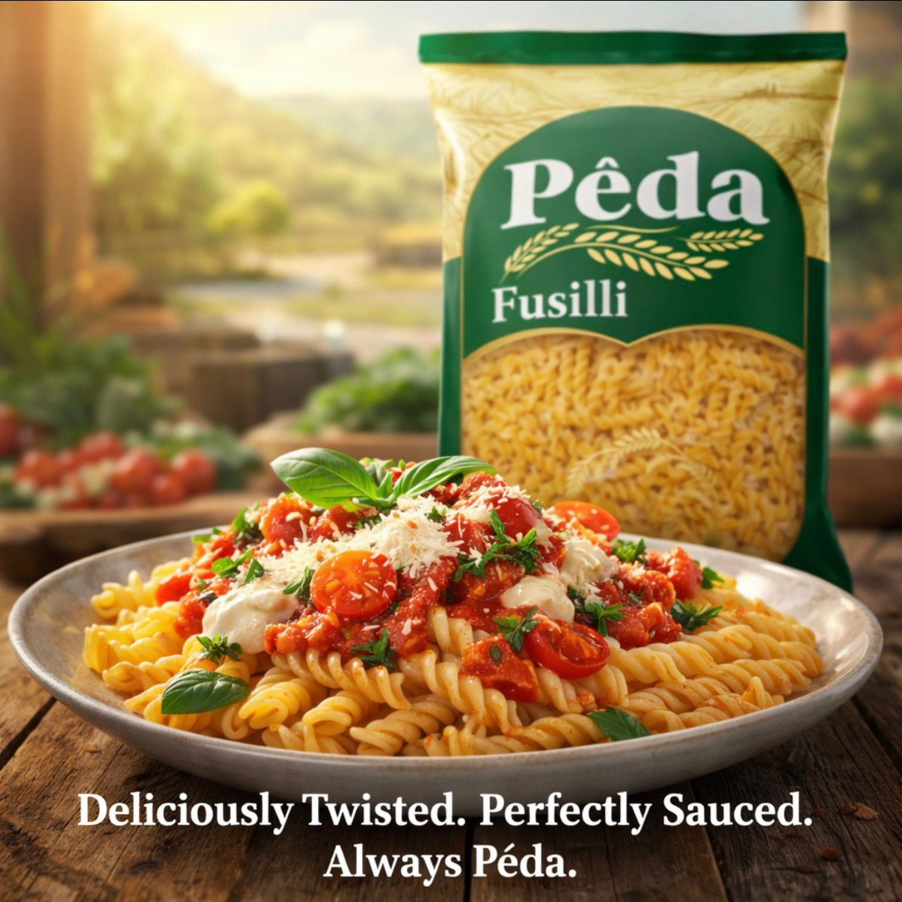

Available for Bulk Purchase

Vermicelli
Locally sourced from Duhok plains. Perfect for rice.
Fresh

Fusilli
Fusilli Made with Italian machinery for perfect texture.
Perfect Texture


Locally sourced from Duhok plains. Perfect for rice.

Fusilli Made with Italian machinery for perfect texture.